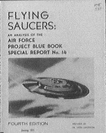

Analyse de rapport d'objets aériens non identifiés - Projet n° {{10073 | number}}
Couverture de la 4ᵉ édition du rapport

Synthèse
Introduction
Origine et nature des données
Réduction des données à une forme pour traitement automatisé
Questionnaire
Système de codage de feuille de travail
Identification des documents de travail
Evaluation de rapports individuels
Analyse des données
Distributions de fréquence et pourcentage par caractéristiques
Présentation graphique
Etude avancée des données
Position du Soleil par rapport à l'observateur
Test statistique du χ
2
Le modèle des "soucoupes volantes"
Conclusions
Annexes
Tabulation de fréquence et distributions de pourcentage par caractéristiques
Formulaires de documents de travail
Proposition de feuille de données d'observateur
Proposition de questionnaire d'observateur
Feuille d'information de l'US Air Force
Codes pour feuille de travail
Feuille de travail
Codes pour bible des cartes
Bible des cartes
Exemple d'une carte IBM